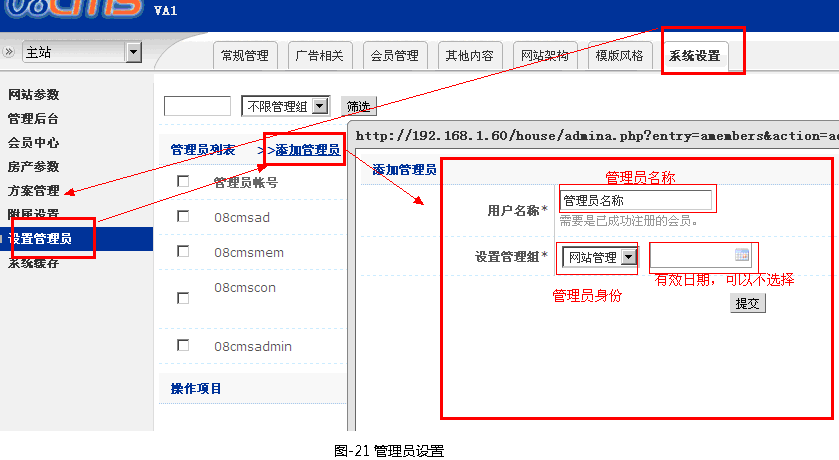
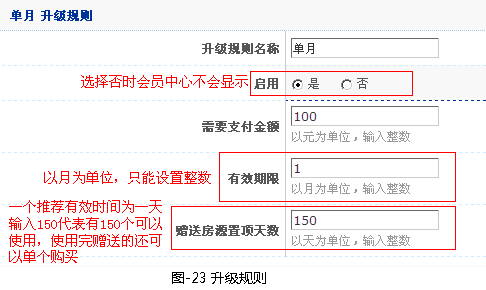
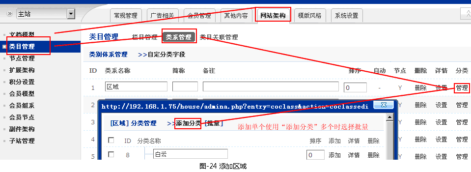
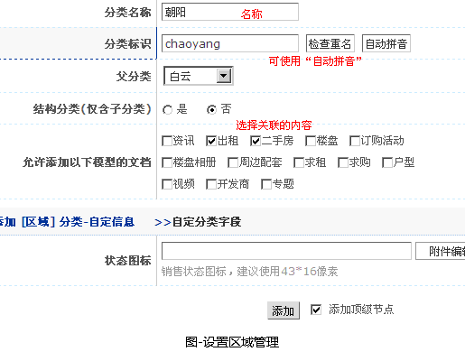
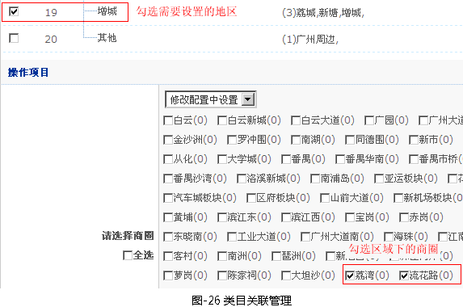
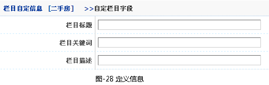

答：
有以下几个步骤：
第一步、1. 进入“网站架构”―》“类目管理”，把“二手房”和“出租”设置为顶级栏目，删除“房源”栏目
第二步、（以“二手房”为例讲解）进入“二手房”栏目的详情设置，找到“文档页静态保存格式”参数，设置为“{$topdir}/{$y}{$m}/{$aid}/{$addno}-{$page}.html”
第三步、.进入“系统设置”―》“附属设置”―》“域名管理”，点“添加域名”管理。填写“系统路径”为“html/house/”；“指向域名”为“http://house.08cms.com/”（需要的二级域名）。
第四步、经完以上08房产系统需要的设置后，到所申请的域名管理后台把二级域名指向到服务器，再设置好二级域名所指向的目录，设置完成
答：
1. 成为管理员的会员必需是普通会员，经纪人及经纪公司会员无法设置为管理员
2. 管理员设置(如图-22所示)

3. 不同管理员权限分配如下
（1） 网站管理：拥有网站的所有权限
（2） 内容管理：可进行文档内容管理（常规管理）
（3） 会员管理：进行会员管理（会员管理）
（4） 广告管理：进行广告管理（广告管理）
答： 1. 进入“系统设置”―》“房产参数”―》“房源发布限制”
2. 分别对“普通会员”、“普通经纪人”、“高级经纪人”不同的会员组进行参数设置
3. 各参数的用途
（1）租售房源总数：可发布出租出售房源的总数，可理解为库存数量；
（2）租售房源前台数量：可在前台显示的出租出售房源总数，可理解为房源的上架总数；
（3）每日允许刷新次数：每日对出租出售房源进行刷新的操作次数，刷新后的房源在房源列表中排名靠前，更有利于出售
（4）需求发布数量：发布求租求购的总数
答：
1.“系统设置”―>“房产参数”
2.经纪人升级规则
系统可以自定义四套收费经纪人方案设置说明(如图-23所示)。

4. 房源置顶规则
第一个参数代表单个置顶的费用，第二个参数代表一个房源一次最少置顶多少天
5. 房源发布限制
系统可以发布房源的会员有“普通会员”、“普通经纪人”、“高级经纪人”，不同的会员可以设置单独设置发布文档的数量限制，各参数说明以下以普通会员做解说
（1） 租售房源总数：可以发布的出租和出售房源的数量；
（2） 租售房源前台数量：允许在网站前台展示的房源数量，发布过多的房源会进入仓库
（3） 每日允许刷新次数：刷新房源可以提升房源在网站前台的排名；
（4） 需求发布数量：需要信息的发布总数
6. 房产其它参数
（1） 房源图片关联楼盘：默认为否，如果需要会员中心发布的户型图和楼盘图片关联上相关的楼盘需要设置为“是”；
（2） 关闭商圈类系：如果所在城市没有商圈请选择关闭；
（3） 关闭地铁线路与站点：如果所在城市没有地铁请选择关闭
答：
1、添加区域（如图-24所示）

2.设置区域管理（如图-25所示）

3. 删除：选择不需要分类右边的删除
4.设置地区与商圈之间的关联（地铁与站点的设置相似）
进入“类目关联管理”，找到对就的方案“区域*商圈”进入详情（如图-26所示

答：
1. 内容模板的相关调整，在“常规管理”添加内容页中“title”就是“标题”、“keyword”就是“关键词”、“description”就是“摘要”
2. 列表页需要进入“网站架构”―》“类目管理”―》“栏目管理”，进入需要调整的栏目中的“详情”把以下内容填写（如图-28所示）上

3. 高级应用，如果系统设置的参数无法满足seo的要求，请找到需要调整的模板，如果需要调整“二手房内容页时”，请进入“模板风格”―》“模板管理”―》“常规模板库”―》“文档模板”找到“二手房内容”页，进入编辑，编辑模板文件，如果需要用到激活地区，则在相关地方调用一个“类目节点”的标识。
1.进入会员中心->房源管理->出售管理 或 出租管理
2.使用“置顶功能”和“刷新”，让房源在页面上显示的位置靠前，“置顶功能”优先级高于“刷新”操作